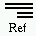
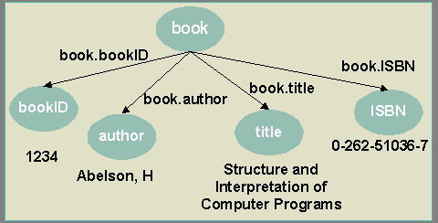

|
 |
Berkeley DB XML offers effective and flexible indexing functionality that gives application developers powerful control over query performance. Berkeley DB XML indexing strategies are best illustrated by example. Consider the following XML document:
<book bookID="1234"> <author>Abelson, H</author> <title>Structure and Interpretation of Computer Programs</title> <isbn>0-262-51036-7</isbn> </book>
The following figure illustrates this XML document as a graph:

The graph consists of a series of nodes (book; bookID; author; title; ISBN), edges that connect the nodes (book.bookID; book.author; book.title; book.ISBN), and values (1234; Abelson, H; Structure and Interpretation of Computer Programs; 0-262-51036-7).
The indexer maintains index keys based on the nodes, edges, and values of an XML document. Only XML document element and attribute nodes are indexed. Other XML document node types, such as declarations, comments, and processing instructions, are ignored.
When creating index keys from a document, the indexer does not follow external references to document type definitions and external entities. References to internal entities within the document's character data are substituted for their replacement text. References to external entities are removed from the character data.
The indexer concatenates character data mixed with child elements into a single value. For example, the fragment "<a>1<b>2</b>3</a>" has two element type values, element 'a' has value '13', and element 'b' has value '2'.
The indexer expands CDATA sections when indexing a document. For example, the character data <![CDATA[<greeting>Hello, world!</greeting>]]> would be indexed as if the character data were <greeting>Hello, world!</greeting>.
The indexer replaces namespace prefixes with the namespace URI to which they refer. This element type normalization ensures that documents containing the same element types, but different prefixes for the same namespace, will be considered to be identical.
When defining an index within Berkeley DB XML, application developers must specify the name of the node to be indexed and the type of indexing strategy to be maintained for that node. For element nodes the name is the element type, and for attribute nodes the name is the attribute name. All nodes with that name are indexed, regardless of the path to the node.
Applications must specify a value for four index types when defining an index:
The following table summarizes the Berkeley DB XML index type options:
| Index Axis Types | Path Type | Node Type | Key Type | Syntax Type |
|---|---|---|---|---|
| Possible Values | Edge Node | Element Attribute | Equality Presence Substring | String or Number None String |
The following table enumerates the supported Berkeley DB XML indexing strategies:
| Index Strategy(Path-Node-Key-Syntax) | Description |
|---|---|
| none-none-none-none | Disable indexing for a node |
| node-element-presence | Define an Element Presence Index |
| node-attribute-presence | Define an Attribute Presence Index |
| node-element-equality-string | Define an Element Equality Strings Index |
| node-element-equality-number | Define an Element Equality Numbers Index |
| node-element-substring-string | Define an Element Substring Index |
| node-attribute-equality-string | Define an Attribute Equality Strings Index |
| node-attribute-equality-number | Define an Attribute Equality Numbers Index |
| node-attribute-substring-string | Define an Attribute Substring Index |
| edge-element-presence | Define an Element Edge Presence Index |
| edge-attribute-presence | Define an Attribute Edge Presence Index |
| edge-element-equality-string | Define an Element Edge Equality Strings Index |
| edge-element-equality-number | Define an Element Edge Equality Numbers Index |
| edge-element-substring-string | Define an Element Edge Substring Index |
| edge-attribute-equality-string | Define an Attribute Edge Equality Strings Index |
| edge-attribute-equality-number | Define an Attribute Edge Equality Numbers Index |
| edge-attribute-substring-string | Define an Attribute Edge Substrings Index |
The following code example demonstrates how to declare an index:
void example()
{
// Create and open a container.
XmlContainer container(0,"test.dbxml");
container.open(0,DB_CREATE);
// Declare an index for title elements.
XmlIndexSpecification index(container.getIndexSpecification(0));
index.addIndex(
"",
"title",
"node-element-equality-string");
container.setIndexSpecification(0,index);
container.close();
}
Indices are maintained for efficient query processing. Each type of index is suitable for a particular form of XPath expression.
An index of type node-element-presence-none contains keys that record the presence of an element type within a document. They are suitable for path navigation expressions such as '/book/author/name/first', as the index records all documents that contain the element types that appear in the specified path. They are also suitable for expressions containing element type value predicates such as '/book[author='john']', as the index records all documents that have elements of type 'book' and 'author'.
An index of type node-attribute-presence-none contains keys that record the presence of an attribute name within a document. They are suitable for expressions that include path navigation to attributes, such as '/book/@bookID', as the index records all documents that contain 'bookID' attributes. For the same reason, they are also suitable for expressions that include attribute value predicates such as '/book[@bookID='a1b2c3']'.
An index of type node-element-equality-string contains keys that record the value of an element type. They are suitable for expressions that include element type value predicates such as '/book[author='john']', as the index records all documents that have elements of type 'author' with the value 'john'. An equality index is always more selective than a presence index, so Berkeley DB XML query processing favors an equality index lookup over a presence index lookup.
An index of type node-attribute-equality-string contains keys that record the value of an attribute. They are suitable for expressions that include attribute value predicates such as '/book[@bookID='a1b2c3']', as the index records all documents that have 'bookID' attributes with the value 'a1b2c3'.
An index with key type equality and syntax type number contains equality keys that are compared numerically rather than lexically. The numeric syntax supports queries such as '/book[(year=>1980 and year<1990) or year=2000]'.
The query processor uses equality indices for satisfying queries that use the XPath function 'starts-with'. For example, '/book[starts-with(title,'Structure')'].
An index with key type substring (for example, node-element-substring-string) contains keys that support substring queries. XPath substring searches are expressed using the XPath function 'contains'. For example the XPath query '/book[contains(title,'Computer')]' searches for documents that contain the word 'Computer' in their title.
The Berkeley DB XML indexer creates one key for each three-character substring of the node value. For example, the indexer creates substring keys {abc, bcd, cde} if given a node value of 'abcde'.
An index of type edge-element-presence-none is a more specific form of the node-element-presence-none index, and is suitable for expressions containing long path navigations. If an XML document is viewed as a graph, with the elements being nodes, then the index keys are formed from the edges between the nodes. For example, the XML fragment '<a><b><c>d</c></b></a>' has element nodes {a, b, c} and edges {a-b, b-c}. A query with a path expression such as '/a/b/c' can be efficiently satisfied with lookups into the index for the edges {a-b, b-c}. An edge index is always more selective than a node index, so the Berkeley DB XML query processor favors an edge index lookup over a node index lookup.
Equality, and substring indices of node type 'edge' are also supported. Each works in the same way as its node counterpart. For example, indexing the above XML fragment with edge-element-equality-string would give us one key, 'b-c=d'.
Copyright (c) 1996-2003 Sleepycat Software, Inc. - All rights reserved.